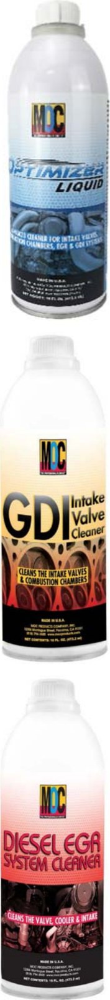

Doc no. MOC-TSB-17-14 // Vol. 17 No. 14 // Dec 7, 2017 // Fuel
Chemicals for EDR-3 Machine Optimizer- Liquid GDI Intake Valve Cleaner Diesel EGR System Cleaner
A liquid, non-aerosol form of Optimizer® is now available in 16oz cans to be used with the new EDR-3 Fuel Service Machine. The versatile product is recommended for Induction Cleaning Services on GDI vehicles. GDI Intake Valve Cleaner and Diesel EGR System Cleaner are also available separately in 16oz cans. The quantity and procedure recommended for each service will vary depending on if the vehicle was brought in for preventative maintenance or for drivability issues.
What's new
Recommended Preventative Maintenance Service Procedure: 2 Can - GDI Induction Service: Start service with 1 can of Optimizer®- Liquid; when depleted, follow up with 1 can of GDI Intake Valve Cleaner (Part No. 04351)
2 Can - Diesel EGR Service: Perform service using 2 (16oz) cans of EGR System Cleaner (Part No. 04361)
Recommended Drivability Issue / Severe Carbon Build-Up Procedure: 3 Can - GDI Induction Service: Start service with 1 can of Optimizer®- Liquid; when depleted, follow up with wash down using 2 (16oz) cans of GDI Intake Valve Cleaner (Part No. 04351)
3 Can - Diesel EGR Service: Perform service using 3 (16oz) cans of EGR System Cleaner (Part No. 04361)
*Quantity and procedure required for each service will depend upon individual vehicle requirements. Consult your representative or maintenance advisor.
Contact
For more information, contact the Machine & Equipment Department at 866.244.6621.

Part numbers
| Part No. | Description | Notes |
|---|---|---|
| 04351 | GDI Intake Valve Cleaner | |
| 04361 | Diesel EGR System Cleaner | |
| 16502 | Optimizer Liquid |